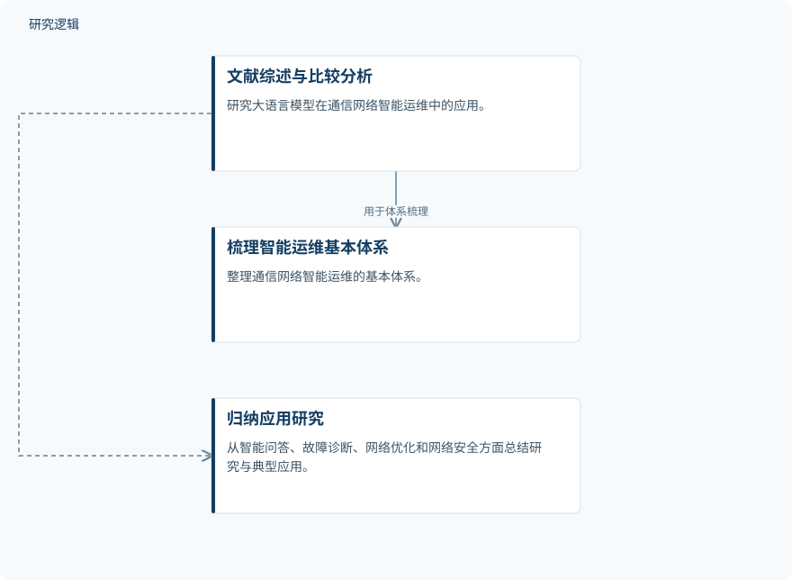

摘要解读
基于大语言模型的通信网络智能运维技术策略分析
Analysis of Intelligent Operation and Maintenance Technology Strategy of Communication Networks Based on Large Language Models
解读更新 2026-10-26 12:48 · 依据公开摘要整理，未核验全文细节
通信网络规模扩大、业务复杂度上升后，仅靠人工经验和规则，越来越难处理多源信息与复杂故障。这篇综述关注大语言模型能为网络运维补上哪些能力，以及为什么它目前更适合作为传统运维系统的补充，而非替代者。
文章目录
网络运维的难点，不只是信息量增加
摘要指出，传统运维方式在多源信息处理和复杂故障分析方面存在局限。大语言模型的自然语言理解、知识关联和跨任务处理能力，为通信网络智能运维提供了新的研究路径。本文关注的是这些能力如何进入运维体系，而不是单一故障识别算法。
用文献综述与比较分析梳理应用版图
研究采用文献综述和比较分析，梳理通信网络智能运维的基本体系，并从智能问答、故障诊断、网络优化和网络安全四个方面总结相关研究与典型应用。这里的主要工作是整理与比较已有研究；摘要没有介绍一个新模型的训练过程，也未提供可供复述的实验配置。
依据摘要整理的综述组织过程


仅概括摘要明确陈述的方法与梳理内容，不表示实验流程或已经验证的系统架构。
下载 SVG图示关系说明
实线表示相邻阶段的信息流，虚线表示跨阶段联系或反馈。
文献综述与比较分析 → 梳理智能运维基本体系：用于体系梳理；文献综述与比较分析 → 归纳应用研究：用于应用归纳
主要价值在交互、知识关联与辅助决策
作者归纳认为，大语言模型能够增强运维人员与网络系统之间的交互，并提升复杂网络任务中的知识关联与辅助决策能力。这是摘要报告的综述性判断，不能据此推导出具体的故障诊断准确率、处置速度或成本改善幅度。
对于系统定位，摘要更倾向于将大语言模型作为传统智能运维系统的能力补充。与专业模型、知识库和自动化运维技术协同，被作者视为进一步推动智能化与自动化的方向；这一表述属于预期用途，不等于协同效果已经得到验证。
能力潜力之外，仍有可靠性与部署约束
摘要明确列出实时性、计算成本、领域知识适配、输出可靠性和数据安全等限制。这意味着，理解和组织信息的能力，并不足以单独说明大语言模型适合承担哪些实际运维职责。
仅凭本次摘要，无法判断综述纳入文献的数量、筛选标准与覆盖范围，也无法核对比较对象、评价指标、实验样本或真实网络验证范围。因此，不能把上述能力判断理解为适用于所有通信网络场景的量化结论；这些细节未在摘要中交代，不代表论文没有讨论。
阅读启发：先看能力边界，再看自动化承诺
阅读启发：进一步阅读时，可重点关注智能问答、故障诊断、网络优化和网络安全各自需要什么能力，以及文献如何支撑这些能力判断。另一个值得追问的问题是：大语言模型、专业模型与知识库如何分工，其实时性、可靠性和数据安全约束又如何影响应用边界。
以上为本站阅读启发与建议，不是论文已验证的结论。